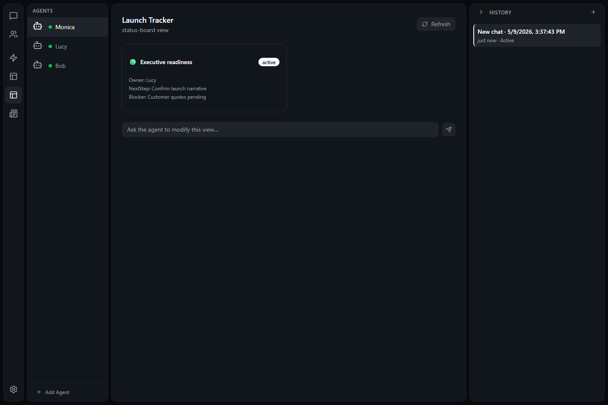
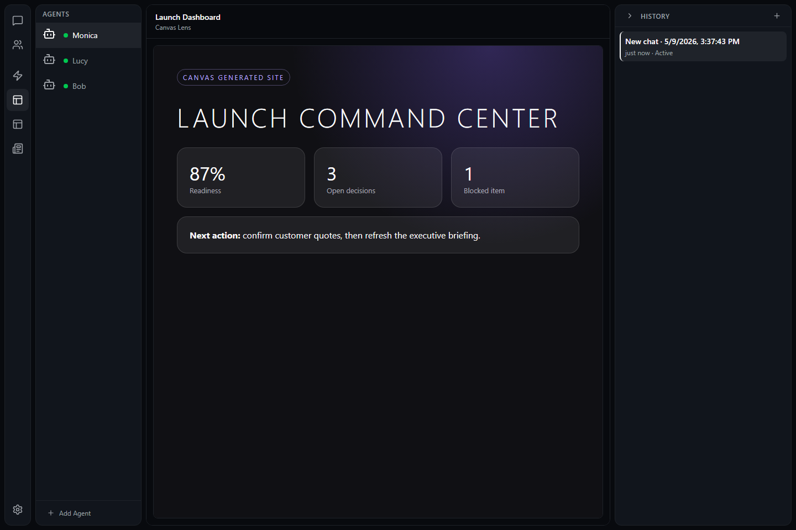

Lens and Canvas let a mind turn your request into a working interface. Instead of
only replying in chat, the mind can build a table, dashboard, form, report, or
browser page and keep improving it as the work changes.
What self-building UI means
Chamber gives minds a place to create screens inside the app. A mind can start
from a chat request, a pasted note, a file, a list of issues, a plan, or a messy
pile of information and turn it into something you can scan and use.

Lens views turn a request into an app screen the mind can refresh and revise.
Ask in normal language: describe the view you want and what it should help you decide.
Review the generated screen: Chamber shows the view in the app or opens it in your browser.
Iterate by chatting: ask the mind to add columns, change sections, group items, or simplify the layout.
Keep it alive: refresh or update the view as the underlying work changes.
Lens views inside Chamber
Lens is the self-modifying UI inside Chamber. A mind chooses a view type based
on the job, creates it for the active mind, and can revise it when you ask for a
better version. You do not need to build the view; ask for what you want to see.
Briefing: a scan-friendly report with highlights, risks, and next steps.
Table: rows and columns for lists, comparisons, owners, due dates, and status checks.
Detail: one customer, issue, decision, candidate, incident, or item shown clearly.
Status board: grouped work such as todo, in progress, blocked, and done.
Timeline: events, milestones, release plans, or history in order.
Editor: draft or review text in a focused writing area.
Form: fields you can fill in to send structured information back to the mind.
Canvas: a richer custom screen or browser page powered by Canvas.
Use a Lens view
1
Ask for the screen you wish existed
For example, ask "turn these meeting notes into a decision tracker",
"show this launch plan as a status board", or "make a briefing I can
send to my manager."
2
Review the generated interface
Open the view, scan the sections, and use chat to ask for corrections,
filters, new columns, clearer labels, or a different format.
3
Use it as part of the workflow
When a view has action buttons, use them to send updates, complete items,
edit details, or ask the mind to continue from the exact context on screen.
Refresh, revise, and act
The first version does not have to be perfect. Treat Lens like a whiteboard the
mind can redraw. Ask it to revise the layout, refresh the data, add missing
context, or turn a rough list into a more useful working surface.
Refresh updates what you see when the source information may have changed.
Revision requests change the view itself, such as adding sections or simplifying labels.
Actions are for follow-up work, such as saving edits, moving a task, or sending a next step.
If an action prompt appears, review it the same way you review any tool approval.
Browser sites with Canvas
Canvas is for moments when the right answer should feel like a small website,
not a chat reply. A mind can create a browser page from a brief, a dataset, a
plan, a report, a list of open questions, or almost any information you give it.
The page can include layout, sections, charts, cards, forms, and buttons.

Canvas can turn a brief or dataset into a dashboard-style browser page with live updates.
Good Canvas requests
"Make an executive dashboard from this weekly update."
"Create a browser site that explains this project to a new teammate."
"Turn this customer research into a sortable insight board."
"Build a printable one-page report with risks, decisions, and next steps."
"Create an interactive intake form for this process."
Live updates
When the mind updates a Canvas, the browser page can reload automatically. That
makes Canvas useful for dashboards and reports you want to keep open while the
mind keeps working.
Ideas to try
Turn a project plan into a status board with owners, dates, and blockers.
Turn meeting notes into a briefing with decisions and follow-up tasks.
Turn a collection of links into a research hub with summaries and next actions.
Turn a long chat into a clean browser report for sharing or printing.
Turn a recurring workflow into a form that captures the same details every time.
Related guides
Learn how views connect to tool approval, scheduled work, and mind templates.